<html>

<head>
<meta http-equiv="Content-Type" content="text/html; charset=windows-1252">
<meta http-equiv="Content-Language" content="en-us">
<meta name="GENERATOR" content="Microsoft FrontPage 4.0">
<meta name="ProgId" content="FrontPage.Editor.Document">
<title>Prescribed displacements from a global strain tensor</title>
</head>

<body>
<Object type="application/x-oleobject" classid="clsid:1e2a7bd0-dab9-11d0-b93a-00c04fc99f9e">
	<param name="Keyword" value="boundary conditions">
	<param name="Keyword" value="prescribed displacements">
	<param name="Keyword" value="theory">
</OBJECT>
<h1>Prescribed displacements from a global strain tensor</h1>
<p class="MsoNormal" style="margin-left:36.0pt;text-indent:-18.0pt;mso-list:l0 level1 lfo2;
tab-stops:list 36.0pt"><i><span lang="EN-US">1-<span style="font:7.0pt &quot;Times New Roman&quot;">&nbsp;&nbsp;&nbsp;&nbsp;&nbsp;
</span>Input of global strain tensor<o:p>
</o:p>
</span></i></p>
<blockquote>
  <p class="MsoNormal"><span lang="EN-US">General Option:<span style="mso-tab-count:
1">&nbsp;&nbsp;&nbsp;&nbsp;&nbsp;&nbsp;&nbsp;&nbsp;&nbsp;&nbsp;&nbsp; </span><span style="mso-text-raise:-23.0pt"><!--[if gte vml 1]><v:shapetype
 id="_x0000_t75" coordsize="21600,21600" o:spt="75" o:preferrelative="t"
 path="m@4@5l@4@11@9@11@9@5xe" filled="f" stroked="f">
 <v:stroke joinstyle="miter"/>
 <v:formulas>
  <v:f eqn="if lineDrawn pixelLineWidth 0"/>
  <v:f eqn="sum @0 1 0"/>
  <v:f eqn="sum 0 0 @1"/>
  <v:f eqn="prod @2 1 2"/>
  <v:f eqn="prod @3 21600 pixelWidth"/>
  <v:f eqn="prod @3 21600 pixelHeight"/>
  <v:f eqn="sum @0 0 1"/>
  <v:f eqn="prod @6 1 2"/>
  <v:f eqn="prod @7 21600 pixelWidth"/>
  <v:f eqn="sum @8 21600 0"/>
  <v:f eqn="prod @7 21600 pixelHeight"/>
  <v:f eqn="sum @10 21600 0"/>
 </v:formulas>
 <v:path o:extrusionok="f" gradientshapeok="t" o:connecttype="rect"/>
 <o:lock v:ext="edit" aspectratio="t"/>
</v:shapetype><v:shape id="_x0000_i1025" type="#_x0000_t75" style='width:105pt;
 height:51pt' o:ole="">
 <v:imagedata src="file:///C:/DOCUME~1/wed/LOCALS~1/Temp/msoclip1/01/clip_image001.wmz"
  o:title=""/>
</v:shape><![endif]-->
  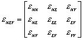</span><!--[if gte mso 9]><xml>
 <o:OLEObject Type="Embed" ProgID="Equation.3" ShapeID="_x0000_i1025"
  DrawAspect="Content" ObjectID="_1131272693">
 </o:OLEObject>
</xml><![endif]-->
  </span></p>
  <p class="MsoNormal" style="margin-left:108.0pt"><b><span lang="EN-US">Note:</span></b><span lang="EN-US">
  <span style="mso-tab-count:1">&nbsp; </span>while the user enters engineering
  strains, scientific strains<br>
  <span style="mso-tab-count:1">&nbsp;&nbsp;&nbsp;&nbsp;&nbsp;&nbsp;&nbsp;&nbsp;&nbsp;&nbsp;&nbsp;
  </span>are used internally.</span></p>
  <p class="MsoNormal"><span lang="EN-US">Vertical Option:<span style="mso-tab-count:
1">&nbsp;&nbsp;&nbsp;&nbsp;&nbsp;&nbsp;&nbsp;&nbsp;&nbsp;&nbsp;&nbsp; </span><span style="mso-text-raise:-23.0pt"><!--[if gte vml 1]><v:shape
 id="_x0000_i1026" type="#_x0000_t75" style='width:101.25pt;height:51pt' o:ole="">
 <v:imagedata src="file:///C:/DOCUME~1/wed/LOCALS~1/Temp/msoclip1/01/clip_image003.wmz"
  o:title=""/>
</v:shape><![endif]-->
  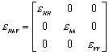</span><!--[if gte mso 9]><xml>
 <o:OLEObject Type="Embed" ProgID="Equation.3" ShapeID="_x0000_i1026"
  DrawAspect="Content" ObjectID="_1131272694">
 </o:OLEObject>
</xml><![endif]-->
  ,<span style="mso-tab-count:2">&nbsp;&nbsp;&nbsp;&nbsp;&nbsp;&nbsp;&nbsp;&nbsp;&nbsp;&nbsp;&nbsp;&nbsp;
  </span>azimuth = </span><span lang="EN-US" style="font-family:Symbol">x</span></p>
  <p class="MsoNormal"><span lang="EN-US"><span style="mso-tab-count:3">&nbsp;&nbsp;&nbsp;&nbsp;&nbsp;&nbsp;&nbsp;&nbsp;&nbsp;&nbsp;&nbsp;&nbsp;&nbsp;&nbsp;&nbsp;&nbsp;&nbsp;&nbsp;&nbsp;&nbsp;&nbsp;&nbsp;&nbsp;&nbsp;&nbsp;&nbsp;&nbsp;&nbsp;&nbsp;&nbsp;&nbsp;&nbsp;&nbsp;&nbsp;&nbsp;
  </span>The global strain tensor in NEV system can then be deduced:</span></p>
  <p class="MsoNormal"><span lang="EN-US"><span style="mso-tab-count:3">&nbsp;&nbsp;&nbsp;&nbsp;&nbsp;&nbsp;&nbsp;&nbsp;&nbsp;&nbsp;&nbsp;&nbsp;&nbsp;&nbsp;&nbsp;&nbsp;&nbsp;&nbsp;&nbsp;&nbsp;&nbsp;&nbsp;&nbsp;&nbsp;&nbsp;&nbsp;&nbsp;&nbsp;&nbsp;&nbsp;&nbsp;&nbsp;&nbsp;&nbsp;&nbsp;
  </span>Rotation matrix,<span style="mso-tab-count:1">&nbsp;&nbsp;&nbsp;&nbsp;&nbsp;&nbsp;&nbsp;&nbsp;&nbsp;&nbsp;&nbsp;
  </span><span style="mso-text-raise:
-23.0pt"><!--[if gte vml 1]><v:shape id="_x0000_i1027" type="#_x0000_t75"
 style='width:111.75pt;height:51pt' o:ole="">
 <v:imagedata src="file:///C:/DOCUME~1/wed/LOCALS~1/Temp/msoclip1/01/clip_image005.wmz"
  o:title=""/>
</v:shape><![endif]-->
  </span><!--[if gte mso 9]><xml>
 <o:OLEObject Type="Embed" ProgID="Equation.3" ShapeID="_x0000_i1027"
  DrawAspect="Content" ObjectID="_1131272695">
 </o:OLEObject>
</xml><![endif]-->
  </span></p>
  <p class="MsoNormal"><span lang="EN-US"><span style="mso-tab-count:3">&nbsp;&nbsp;&nbsp;&nbsp;&nbsp;&nbsp;&nbsp;&nbsp;&nbsp;&nbsp;&nbsp;&nbsp;&nbsp;&nbsp;&nbsp;&nbsp;&nbsp;&nbsp;&nbsp;&nbsp;&nbsp;&nbsp;&nbsp;&nbsp;&nbsp;&nbsp;&nbsp;&nbsp;&nbsp;&nbsp;&nbsp;&nbsp;&nbsp;&nbsp;&nbsp;
  </span><span style="mso-text-raise:-6.0pt"><!--[if gte vml 1]><v:shape id="_x0000_i1028"
 type="#_x0000_t75" style='width:66pt;height:17.25pt' o:ole="">
 <v:imagedata src="file:///C:/DOCUME~1/wed/LOCALS~1/Temp/msoclip1/01/clip_image007.wmz"
  o:title=""/>
</v:shape><![endif]-->
  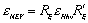</span><!--[if gte mso 9]><xml>
 <o:OLEObject Type="Embed" ProgID="Equation.3" ShapeID="_x0000_i1028"
  DrawAspect="Content" ObjectID="_1131272696">
 </o:OLEObject>
</xml><![endif]-->
  </span></p>
</blockquote>
<p class="MsoNormal" style="margin-left:36.0pt;text-indent:-18.0pt;mso-list:l0 level1 lfo2;
tab-stops:list 36.0pt"><i><span lang="EN-US">2-<span style="font:7.0pt &quot;Times New Roman&quot;">&nbsp;&nbsp;&nbsp;&nbsp;&nbsp;
</span>Definition of reference point, reference line and reference surface<o:p>
</o:p>
</span></i></p>
<blockquote>
  <p class="MsoNormal"><span lang="EN-US">To avoid rigid body motion when
  deducing a displacement field from a strain tensor various fixities need to be
  defined:</span></p>
</blockquote>
<ul>
  <li>
    <p class="MsoNormal" style="margin-left:72.0pt;text-indent:-18.0pt;mso-list:l0 level2 lfo2;
tab-stops:list 72.0pt"><span lang="EN-US">one reference point, with its position
    unchanged by the deformation</span></li>
  <li>
    <p class="MsoNormal" style="margin-left:72.0pt;text-indent:-18.0pt;mso-list:l0 level2 lfo2;
tab-stops:list 72.0pt"><span lang="EN-US">one reference line, with its direction
    unchanged by the deformation</span></li>
  <li>
    <p class="MsoNormal" style="margin-left:72.0pt;text-indent:-18.0pt;mso-list:l0 level2 lfo2;
tab-stops:list 72.0pt"><span lang="EN-US">one reference plane, with its
    orientation unchanged by the deformation.</span></li>
</ul>
<blockquote>
  <p class="MsoNormal"><span lang="EN-US">The reference objects are chose as
  follow (=convention):</span></p>
</blockquote>
<ul>
  <li>
    <p class="MsoNormal" style="margin-left:72.0pt;text-indent:-18.0pt;mso-list:l0 level2 lfo2;
tab-stops:list 72.0pt"><span lang="EN-US">reference point = boundary corner
    point with greatest depth<br>
    &nbsp;&nbsp; <span style="mso-tab-count: 3">&nbsp;&nbsp;&nbsp;&nbsp;&nbsp;&nbsp;&nbsp;&nbsp;&nbsp;&nbsp;&nbsp;&nbsp;&nbsp;&nbsp;&nbsp;&nbsp;
    </span>(secondary criteria= smallest northing and easting)</span></li>
  <li>
    <p class="MsoNormal" style="margin-left:72.0pt;text-indent:-18.0pt;mso-list:l0 level2 lfo2;
tab-stops:list 72.0pt"><span lang="EN-US">reference line =<span style="mso-tab-count:1">
    </span>horizontal line defined by specified azimuth, </span><span lang="EN-US" style="font-family:Symbol">b</span></li>
  <li>
    <p class="MsoNormal" style="margin-left:72.0pt;text-indent:-18.0pt;mso-list:l0 level2 lfo2;
tab-stops:list 72.0pt"><span lang="EN-US">reference plane =<span style="mso-tab-count:1">
    </span>Horizontal plane</span></li>
</ul>
<p class="MsoNormal" style="margin-left:36.0pt;text-indent:-18.0pt;mso-list:l0 level1 lfo2;
tab-stops:list 36.0pt"><i><span lang="EN-US">3-<span style="font:7.0pt &quot;Times New Roman&quot;">&nbsp;&nbsp;&nbsp;&nbsp;&nbsp;
</span>Rotation to reference system<o:p>
</o:p>
</span></i></p>
<blockquote>
  <p class="MsoNormal"><span lang="EN-US">From these fixities, a reference
  system of axis, xyz, is set up:</span></p>
  <p class="MsoNormal">
  <span style="mso-ignore:vglayout;
position:relative;z-index:0;left:-4px;top:18px;width:559px;height:212px">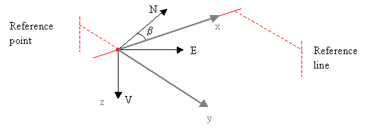</span><span lang="EN-US">&nbsp;<o:p>
  </o:p>
  </span></p>
  <p class="MsoNormal"><span lang="EN-US">x is in the direction of the reference
  line</span></p>
  <p class="MsoNormal"><span lang="EN-US">z is the vertical direction, pointing
  downwards</span></p>
  <p class="MsoNormal"><span lang="EN-US">y is normal to x and y</span></p>
  <p class="MsoNormal"><span lang="EN-US">xyz is a right-hand side system</span></p>
  <p class="MsoNormal"><span lang="EN-US">The rotation matrix from NEV to xyz is<span style="mso-tab-count:3">&nbsp;&nbsp;&nbsp;&nbsp;&nbsp;&nbsp;&nbsp;&nbsp;&nbsp;&nbsp;&nbsp;&nbsp;&nbsp;&nbsp;&nbsp;&nbsp;&nbsp;&nbsp;&nbsp;&nbsp;&nbsp;&nbsp;&nbsp;&nbsp;
  </span><span style="mso-text-raise:
-23.0pt"><!--[if gte vml 1]><v:shape id="_x0000_i1029" type="#_x0000_t75"
 style='width:116.25pt;height:51pt' o:ole="">
 <v:imagedata src="file:///C:/DOCUME~1/wed/LOCALS~1/Temp/msoclip1/01/clip_image010.wmz"
  o:title=""/>
</v:shape><![endif]-->
  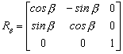</span><!--[if gte mso 9]><xml>
 <o:OLEObject Type="Embed" ProgID="Equation.3" ShapeID="_x0000_i1029"
  DrawAspect="Content" ObjectID="_1131272698">
 </o:OLEObject>
</xml><![endif]-->
  </span></p>
  <p class="MsoNormal"><span lang="EN-US">The global strain tensor expressed in
  xyz is obtained<span style="mso-tab-count:2">&nbsp;&nbsp;&nbsp;&nbsp;&nbsp;&nbsp;&nbsp;&nbsp;&nbsp;&nbsp;&nbsp;&nbsp;&nbsp;&nbsp;&nbsp;&nbsp;&nbsp;
  </span><span style="mso-text-raise:-24.0pt"><!--[if gte vml 1]><v:shape id="_x0000_i1030"
 type="#_x0000_t75" style='width:2in;height:53.25pt' o:ole="">
 <v:imagedata src="file:///C:/DOCUME~1/wed/LOCALS~1/Temp/msoclip1/01/clip_image012.wmz"
  o:title=""/>
</v:shape><![endif]-->
  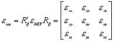</span><!--[if gte mso 9]><xml>
 <o:OLEObject Type="Embed" ProgID="Equation.3" ShapeID="_x0000_i1030"
  DrawAspect="Content" ObjectID="_1131272699">
 </o:OLEObject>
</xml><![endif]-->
  </span></p>
</blockquote>
<p class="MsoNormal" style="margin-left:36.0pt;text-indent:-18.0pt;mso-list:l0 level1 lfo2;
tab-stops:list 36.0pt"><i><span lang="EN-US">4-<span style="font:7.0pt &quot;Times New Roman&quot;">&nbsp;&nbsp;&nbsp;&nbsp;&nbsp;
</span>Calculation of displacement field<o:p>
</o:p>
</span></i></p>
<blockquote>
  <p class="MsoNormal"><span lang="EN-US">The displacements in the x, y and z
  directions are noted u, v and w respectively.</span></p>
  <p class="MsoNormal"><span lang="EN-US">The fixities adopted in 2- result in:<span style="mso-tab-count:1">&nbsp;&nbsp;&nbsp;&nbsp;&nbsp;&nbsp;&nbsp;&nbsp;
  </span><span style="mso-text-raise:-11.0pt"><!--[if gte vml 1]><v:shape
 id="_x0000_i1031" type="#_x0000_t75" style='width:32.25pt;height:29.25pt'
 o:ole="">
 <v:imagedata src="file:///C:/DOCUME~1/wed/LOCALS~1/Temp/msoclip1/01/clip_image014.wmz"
  o:title=""/>
</v:shape><![endif]-->
  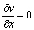</span><!--[if gte mso 9]><xml>
 <o:OLEObject Type="Embed" ProgID="Equation.3" ShapeID="_x0000_i1031"
  DrawAspect="Content" ObjectID="_1131272700">
 </o:OLEObject>
</xml><![endif]-->
  <span style="mso-tab-count:1"> </span>, <span style="mso-text-raise:-11.0pt"><!--[if gte vml 1]><v:shape id="_x0000_i1032"
 type="#_x0000_t75" style='width:33.75pt;height:29.25pt' o:ole="">
 <v:imagedata src="file:///C:/DOCUME~1/wed/LOCALS~1/Temp/msoclip1/01/clip_image016.wmz"
  o:title=""/>
</v:shape><![endif]-->
  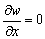</span><!--[if gte mso 9]><xml>
 <o:OLEObject Type="Embed" ProgID="Equation.3" ShapeID="_x0000_i1032"
  DrawAspect="Content" ObjectID="_1131272701">
 </o:OLEObject>
</xml><![endif]-->
  <span style="mso-spacerun: yes">&nbsp;</span>and <span style="mso-text-raise:-11.0pt"><!--[if gte vml 1]><v:shape id="_x0000_i1033"
 type="#_x0000_t75" style='width:33.75pt;height:29.25pt' o:ole="">
 <v:imagedata src="file:///C:/DOCUME~1/wed/LOCALS~1/Temp/msoclip1/01/clip_image018.wmz"
  o:title=""/>
</v:shape><![endif]-->
  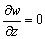</span><!--[if gte mso 9]><xml>
 <o:OLEObject Type="Embed" ProgID="Equation.3" ShapeID="_x0000_i1033"
  DrawAspect="Content" ObjectID="_1131272702">
 </o:OLEObject>
</xml><![endif]-->
  <span style="mso-tab-count:3">&nbsp;&nbsp;&nbsp;&nbsp;&nbsp;&nbsp;&nbsp;&nbsp;&nbsp;&nbsp;&nbsp;&nbsp;&nbsp;&nbsp;&nbsp;&nbsp;&nbsp;&nbsp;&nbsp;&nbsp;&nbsp;&nbsp;&nbsp;&nbsp;&nbsp;&nbsp;&nbsp;</span></span></p>
  <p class="MsoNormal"><span lang="EN-US">Consequently, the linear displacement
  field is obtained in function of the position vector:</span></p>
  <p class="MsoNormal"><span lang="EN-US"><span style="mso-tab-count:2">&nbsp;&nbsp;&nbsp;&nbsp;&nbsp;&nbsp;&nbsp;&nbsp;&nbsp;&nbsp;&nbsp;&nbsp;&nbsp;&nbsp;&nbsp;&nbsp;&nbsp;&nbsp;&nbsp;&nbsp;&nbsp;&nbsp;&nbsp;
  </span><span style="mso-text-raise:-6.0pt"><!--[if gte vml 1]><v:shape id="_x0000_i1034"
 type="#_x0000_t75" style='width:129pt;height:17.25pt' o:ole="">
 <v:imagedata src="file:///C:/DOCUME~1/wed/LOCALS~1/Temp/msoclip1/01/clip_image020.wmz"
  o:title=""/>
</v:shape><![endif]-->
  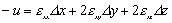</span><!--[if gte mso 9]><xml>
 <o:OLEObject Type="Embed" ProgID="Equation.3" ShapeID="_x0000_i1034"
  DrawAspect="Content" ObjectID="_1131272703">
 </o:OLEObject>
</xml><![endif]-->
  </span></p>
  <p class="MsoNormal"><span lang="EN-US"><span style="mso-tab-count:2">&nbsp;&nbsp;&nbsp;&nbsp;&nbsp;&nbsp;&nbsp;&nbsp;&nbsp;&nbsp;&nbsp;&nbsp;&nbsp;&nbsp;&nbsp;&nbsp;&nbsp;&nbsp;&nbsp;&nbsp;&nbsp;&nbsp;&nbsp;
  </span><span style="mso-text-raise:-6.0pt"><!--[if gte vml 1]><v:shape id="_x0000_i1035"
 type="#_x0000_t75" style='width:90pt;height:17.25pt' o:ole="">
 <v:imagedata src="file:///C:/DOCUME~1/wed/LOCALS~1/Temp/msoclip1/01/clip_image022.wmz"
  o:title=""/>
</v:shape><![endif]-->
  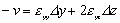</span><!--[if gte mso 9]><xml>
 <o:OLEObject Type="Embed" ProgID="Equation.3" ShapeID="_x0000_i1035"
  DrawAspect="Content" ObjectID="_1131272704">
 </o:OLEObject>
</xml><![endif]-->
  </span></p>
  <p class="MsoNormal" style="margin-left:72.0pt"><span lang="EN-US" style="mso-text-raise:-5.0pt"><!--[if gte vml 1]><v:shape id="_x0000_i1036"
 type="#_x0000_t75" style='width:51.75pt;height:15.75pt' o:ole="">
 <v:imagedata src="file:///C:/DOCUME~1/wed/LOCALS~1/Temp/msoclip1/01/clip_image024.wmz"
  o:title=""/>
</v:shape><![endif]-->
  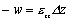<!--[if gte mso 9]><xml>
 <o:OLEObject Type="Embed" ProgID="Equation.3" ShapeID="_x0000_i1036"
  DrawAspect="Content" ObjectID="_1131272705">
 </o:OLEObject>
</xml><![endif]-->
  </span></p>
  <p class="MsoNormal"><span lang="EN-US">In matrix notation, using P for the
  position vector of the considered point and U for the deduced displacement
  vector in this point:</span></p>
  <p class="MsoNormal"><span lang="EN-US"><span style="mso-tab-count:2">&nbsp;&nbsp;&nbsp;&nbsp;&nbsp;&nbsp;&nbsp;&nbsp;&nbsp;&nbsp;&nbsp;&nbsp;&nbsp;&nbsp;&nbsp;&nbsp;&nbsp;&nbsp;&nbsp;&nbsp;&nbsp;&nbsp;&nbsp;
  </span><span style="mso-text-raise:-23.0pt"><!--[if gte vml 1]><v:shape id="_x0000_i1037"
 type="#_x0000_t75" style='width:201.75pt;height:51pt' o:ole="">
 <v:imagedata src="file:///C:/DOCUME~1/wed/LOCALS~1/Temp/msoclip1/01/clip_image026.wmz"
  o:title=""/>
</v:shape><![endif]-->
  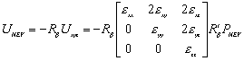</span><!--[if gte mso 9]><xml>
 <o:OLEObject Type="Embed" ProgID="Equation.3" ShapeID="_x0000_i1037"
  DrawAspect="Content" ObjectID="_1131272706">
 </o:OLEObject>
</xml><![endif]-->
  </span></p>
  <p class="MsoNormal"><span lang="EN-US"><span style="mso-tab-count:2">&nbsp;&nbsp;&nbsp;&nbsp;&nbsp;&nbsp;&nbsp;&nbsp;&nbsp;&nbsp;&nbsp;&nbsp;&nbsp;&nbsp;&nbsp;&nbsp;&nbsp;&nbsp;&nbsp;&nbsp;&nbsp;&nbsp;&nbsp;
  </span>where P<sub>NEV</sub> is the vector starting at the reference point and
  ending at the<br>
  <span style="mso-tab-count:2">&nbsp;&nbsp;&nbsp;&nbsp;&nbsp;&nbsp;&nbsp;&nbsp;&nbsp;&nbsp;&nbsp;&nbsp;&nbsp;&nbsp;&nbsp;&nbsp;&nbsp;&nbsp;&nbsp;&nbsp;&nbsp;&nbsp;&nbsp;
  </span>considered point, expressed in the NEV system</span></p>
</blockquote>

</body>

</html>
